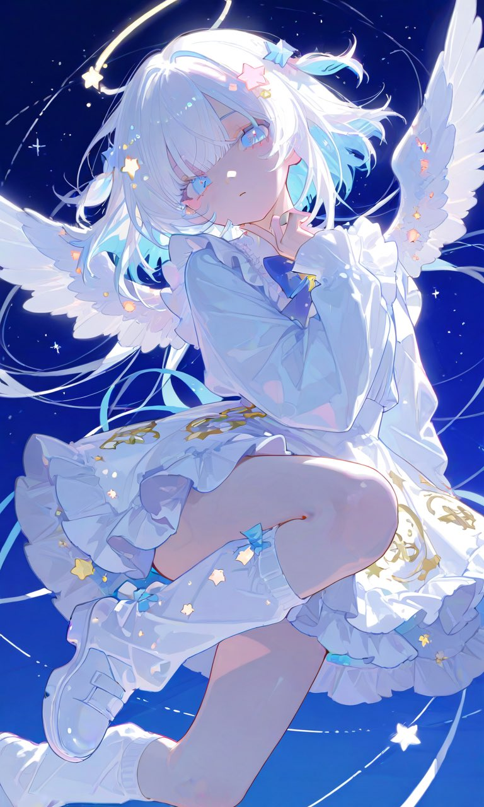

본문으로 건너뛰기
✳
DAHLIA
.
메뉴 열기
SOOP
YouTube
X
Projects
원본 계정
↗
DAHLIA · 활동 기록
Dahlia 커뮤니티 활동 아카이브
큐브를 돌려 기록을 둘러보세요.
✦
✧
✧
SOOP · 01

흩어진 순간을
모두 기록하다
캐치 · 클립 · VOD
↗
YouTube · 02
✧
세로의 순간,
긴 여운
Shorts · 동영상
↗
X · 03
짧은 문장에
남은 흔적
게시물 기록
↗
PROJECTS · 04
✦
직접 만든 도구와
작은 실험들
프로젝트 둘러보기
↗
PLATFORM LINKS · 05
↗
각 플랫폼의
원본 계정으로
공식 채널 링크
↗
OPEN SPACE · 06
필요해질 때
채워 갈게요
SOOP 기록
드래그 · 스와이프 · 클릭
01
/ 06
달리아의 활동 기록
큐브를 드래그해 둘러보세요
SOOP · YouTube · X